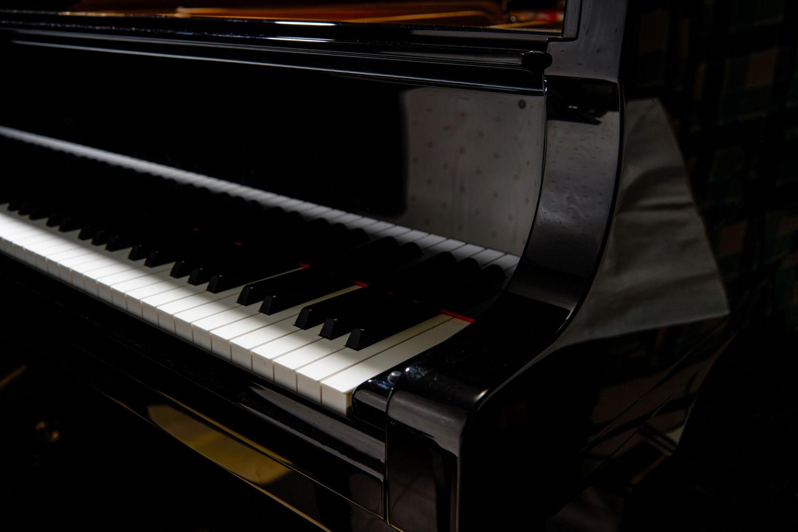
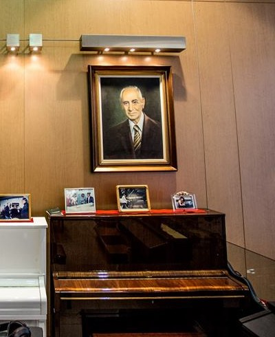
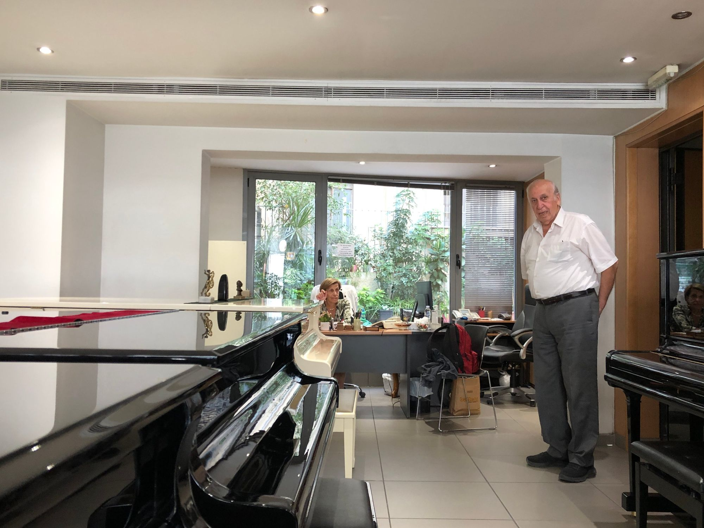
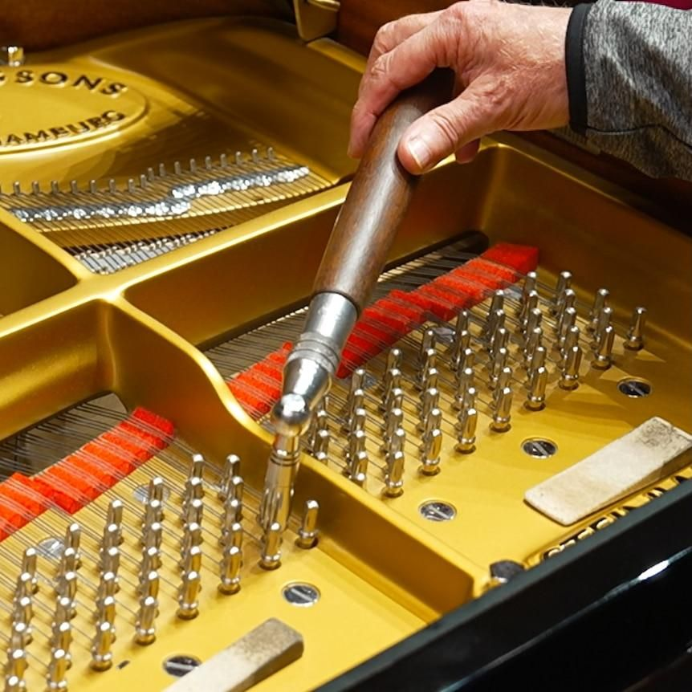
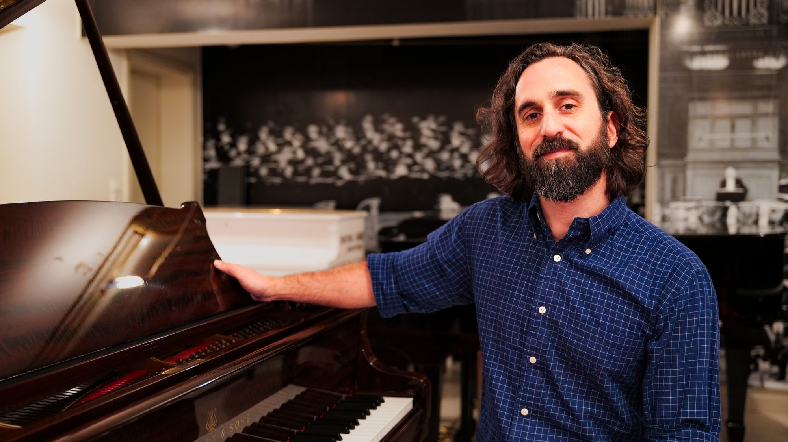
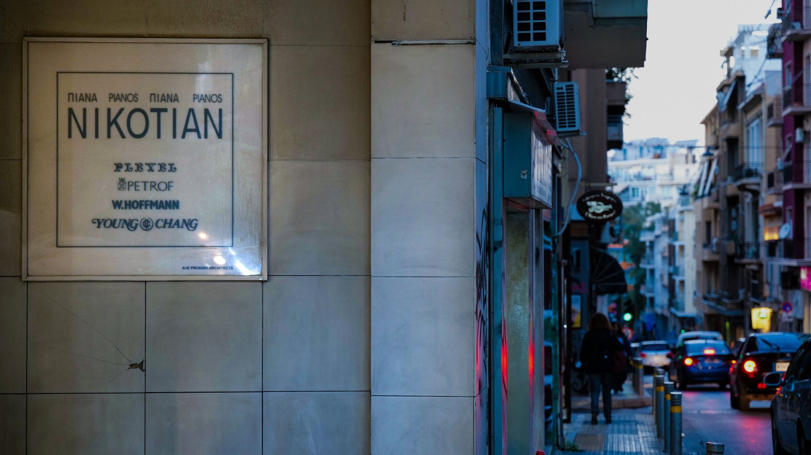
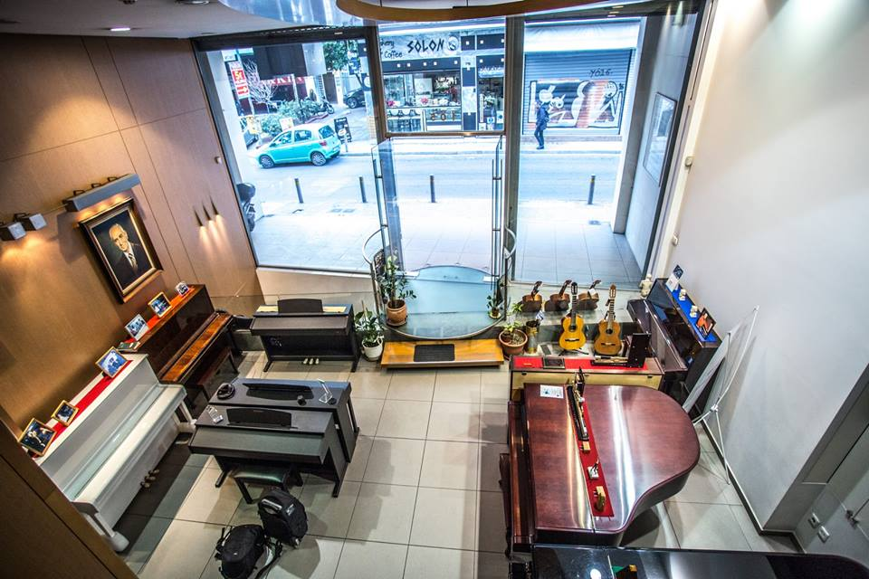

Ο Οίκος
Μια διαδρομή γεμάτη μουσική.
Ο Κάρλο Νικοτιάν ίδρυσε τον μουσικό οίκο στην Αθήνα το 1929. Σχεδόν έναν αιώνα αργότερα, ο Οίκος παραμένει οικογενειακός και το πιάνο παραμένει το κέντρο του: το ακούμε, το φροντίζουμε και το συστήνουμε σε όσους θα το παίξουν.


Η αρχή
Όλα ξεκίνησαν από τον ήχο.
Ο Κάρλο Νικοτιάν ήταν τεχνικός και χορδιστής πιάνων. Η δουλειά του ξεκινούσε από το αυτί: να ακούσει ένα όργανο, να καταλάβει τι χρειάζεται και να του επιστρέψει τη σωστή του φωνή.
Τον Μάρτιο του 1929 ίδρυσε τον μουσικό οίκο στην οδό Ακαδημίας 63. Η εξειδίκευσή του στη συντήρηση και στο χόρδισμα τον έφερε κοντά σε μουσικούς της εποχής, και ο Οίκος συνδέθηκε με ρεσιτάλ σημαντικών καλλιτεχνών στην Αθήνα.
Ανάμεσα στα τεκμήρια εκείνων των χρόνων, η ιστορία του Οίκου αναφέρει συγχαρητήριες επιστολές του Ρουμπινστάιν και του Άρτουρ Σνάμπελ.
-
Επιστολή του Ρουμπινστάιν
Το πρωτότυπο θα προστεθεί από το οικογενειακό αρχείο. -
Επιστολή του Άρτουρ Σνάμπελ
Το πρωτότυπο θα προστεθεί από το οικογενειακό αρχείο.
Η διαδρομή μας
Σχεδόν ένας αιώνας διαδρομής.
Από την Ακαδημίας στη Σόλωνος: πέντε στιγμές που σημάδεψαν τον Οίκο και τους ανθρώπους του.
-
Η ίδρυση
Ο Κάρλο Νικοτιάν ιδρύει τον μουσικό οίκο στην οδό Ακαδημίας 63, στην Αθήνα.
-
Η συνεργασία με τη Young Chang
Ο Κάρλο και ο γιος του, Στεπάν, ξεκινούν τη συνεργασία με τον κατασκευαστή πιάνων της Νότιας Κορέας.
-
Η οικογενειακή συνέχεια
Μετά τον θάνατο του Κάρλο, τη δραστηριότητα του Οίκου συνεχίζουν τα παιδιά του, ο Στεπάν και η Αρούς.
-
–
Η επόμενη γενιά
Ο Κάρολος εντάσσεται στον Οίκο το 2000, έχοντας εκπαιδευτεί στην τεχνική των πιάνων στη Grotrian Steinweg. Το 2008 ακολουθεί ο Ρομπέρ.
-
Σήμερα
Σόλωνος 105
Ο Οίκος συνεχίζει τη δραστηριότητά του στο κέντρο της Αθήνας.
Η επόμενη γενιά
Η γνώση περνά από χέρι σε χέρι.
Η τεχνική του πιάνου δεν μαθαίνεται μόνο από βιβλία. Μαθαίνεται δίπλα σε κάποιον που ξέρει, πάνω στο ίδιο το όργανο, με τα χρόνια.
Έτσι πέρασε η γνώση στον Οίκο: από τον Κάρλο στα παιδιά του, τον Στεπάν και την Αρούς, και από εκεί στην επόμενη γενιά. Ο Κάρολος συμπλήρωσε την οικογενειακή εμπειρία με εκπαίδευση στην τεχνική των πιάνων στη Grotrian Steinweg· ο Ρομπέρ Καραμπετιάν εντάχθηκε στη δουλειά του Οίκου το 2008.

Ό,τι ξεκίνησε ως γνώση ενός ανθρώπου έγινε δουλειά μιας οικογένειας.



Σήμερα
Η ιστορία συνεχίζεται στη Σόλωνος.
Η έκθεση του Οίκου βρίσκεται στη Σόλωνος 105, στο κέντρο της Αθήνας. Εκεί θα βρείτε πιάνα καινούργια και μεταχειρισμένα, όρθια και με ουρά, και ανθρώπους που μπορούν να σας μιλήσουν για καθένα από αυτά.
Η καλύτερη συνέχεια αυτής της ιστορίας γράφεται από κοντά.
